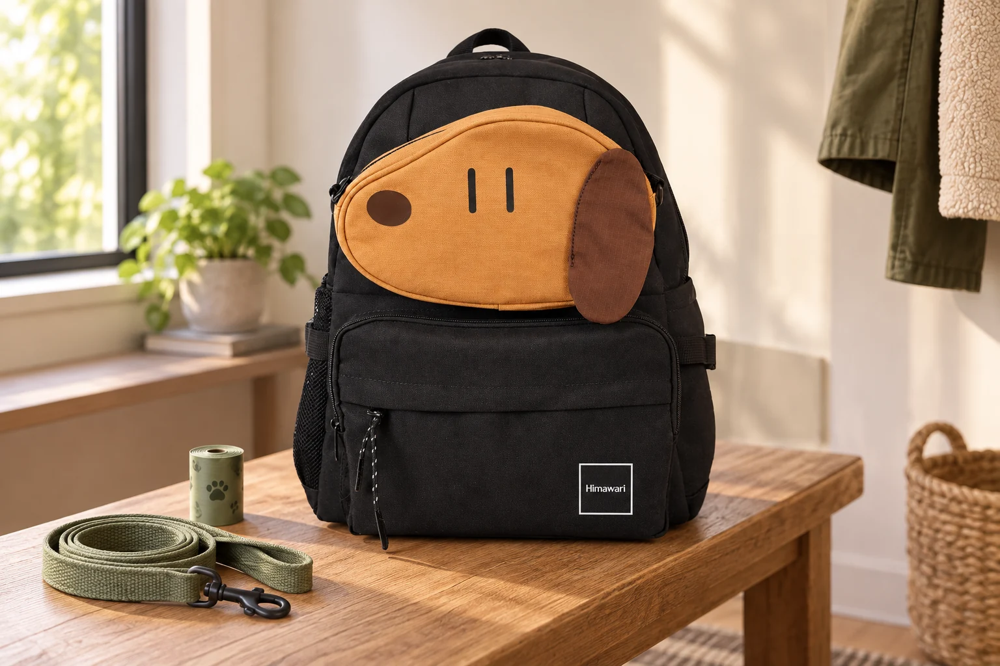

반려견과 산책할 때, 백팩은 멈춰서 여는 순서부터

현관에서는 잘 정리했던 백팩도 산책 중에는 다르게 느껴집니다. 한 손은 리드줄을 잡고 있고, 다른 손으로는 봉투를 꺼내야 합니다. 뒤쪽 포켓의 위치를 아는 것과 실제로 쉽게 꺼낼 수 있는 것은 별개의 문제입니다. 산책용 짐을 준비할 때는 몇 개를 넣을지보다 가방을 언제, 어디에서 열 것인지 먼저 떠올려보세요.
출발 전에 한 번 쓸 분량을 꺼내보세요
배변봉투는 묶음째 깊숙이 넣기보다 첫 장을 꺼낼 수 있는 상태로 준비합니다. 봉투 케이스를 쓴다면 출구에서 끝부분이 보이는지, 산책에 필요한 수량이 남아 있는지 현관에서 확인하세요. 티슈와 작은 수건도 새 포장을 여는 일까지 밖에서 하지 않도록 정리합니다. 그렇다고 전부 백팩 밖에 매달 필요는 없습니다. 자주 쓰는 것 한두 가지만 정한 자리에 두고 나머지는 닫힌 수납칸에 넣으면 걸리는 끈과 장식을 줄일 수 있습니다.
백팩을 벗기 전에는 먼저 멈출 자리를 정하세요
사람이 지나가는 길 한가운데에서 어깨를 돌려 포켓을 더듬으면 가방 안쪽도 주변도 보기 어렵습니다. 잠시 멈출 수 있는 여유 공간을 찾고 반려견과 리드줄을 안정적으로 관리한 뒤 필요한 물건을 꺼내세요. 가방을 열려고 리드줄을 놓거나, 백팩 손잡이와 어깨끈에 리드줄을 임의로 연결하지 않습니다. 혼자서 두 동작을 함께 하기 어렵다면 준비물의 위치를 바꾸거나 동행인에게 도움을 받는 편이 낫습니다.
먹을 것과 사용한 물건은 돌아갈 곳이 달라요
간식은 전용 용기에 닫아 두고 개인 소지품과 직접 섞이지 않게 합니다. 사용한 티슈나 젖은 수건을 다시 넣을 임시 주머니도 별도로 정해두세요. 배변을 담은 봉투는 매듭만 지었다고 깨끗한 짐과 함께 넣지 말고, 누출을 막을 수 있는 별도 수거 용기와 정해진 처리 방법을 준비합니다. 산책 후에도 가방 속에 보관해두는 용도로 생각하지 않습니다. 깨끗한 봉투를 꺼내는 자리와 사용한 물건을 잠시 두는 자리를 나누면 손이 덜 헷갈립니다.
물그릇을 접기 전에 남은 물부터 확인하세요
휴대용 물그릇은 접힌 크기가 작아도 사용 직후에는 안쪽과 접히는 틈에 물이 남습니다. 남은 물을 정리하고 겉면을 닦은 뒤, 깨끗한 물건과 분리해 되담으세요. 귀가하면 꺼내 제품 안내에 따라 세척하고 완전히 말립니다. 짧은 산책과 오래 머무는 외출에 같은 짐을 무조건 넣기보다 일정에 맞게 준비하되, 물통과 그릇이 더해진 무게로 실제 백팩을 메어보는 과정은 생략하지 않는 편이 좋습니다.
강아지 모양의 가방과 반려동물 전용 가방은 구분하세요
사진 속 Himawari No.0423은 앞면의 강아지 얼굴 모양 포켓이 특징인 백팩입니다. 이 디자인만으로 반려동물 이동장이나 산책 전용 기능이 있다고 해석하지는 않습니다. 선택할 때는 가지고 다닐 용기와 소품이 실제 포켓에 맞는지, 지퍼를 닫고 다시 열기 편한지를 제품 정보와 함께 확인하세요. 산책을 마치면 사용한 물건부터 꺼내고 봉투 수량을 채워둡니다. 다음 외출은 백팩 전체를 다시 뒤지는 대신 정해둔 자리만 확인하며 시작할 수 있습니다.
참고·안내
- Himawari No.0423 제품 정보
- 실제 Himawari No.0423 제품 사진을 참조해 만든 AI 연출 이미지입니다. 리드줄과 배변봉투는 연출 소품이며 제품 구성에 포함되지 않습니다.
자주 묻는 질문
자주 쓰는 물건은 모두 백팩 바깥에 걸어두면 좋을까요?
밖에 단 끈과 물건이 리드줄에 엉키거나 주변에 걸릴 수 있습니다. 실제 필요한 것만 위치를 정하고, 나머지는 닫힌 칸에 두세요.
No.0423은 반려동물을 넣는 가방인가요?
이 글은 사람이 산책 준비물을 챙기는 방법을 설명합니다. 강아지 모양 포켓을 반려동물 이동 기능으로 해석하지 마세요.